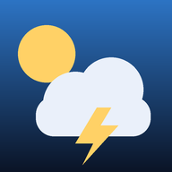

Iniciando…

Instale o Tempo Agora PWSIS no celularTempo Agora PWSIS
Localizando…
Permita o acesso à localização quando o celular pedir
Alertas
INMET · Defesa Civil · previsãoPerigo potencialPerigoGrande perigo
Próximas 48 horas
Deslize →Condições
Vento
km/h · 10 m do soloNotificações e app
Tempo na barra de notificações
Mostra a temperatura no ícone da barra do celular e o resumo do dia na lista de notificações. Silenciosa, sem som.
Alertas oficiais novos
Avisa com som quando o INMET ou a Defesa Civil emitirem um alerta que cubra a sua localização.
--° · —
—
Ative uma das opções acima para ver o status do segundo plano.
Gráficos · 48 h
Consenso dos modelos
ECMWF · GFS · ICON · JMAOs quatro principais modelos globais de previsão, comparados dia a dia. Quando concordam, a previsão é mais confiável.
Resumo do período
14 diasDia a dia
Toque para detalhesFases da Lua
30 diasSol e Lua hoje
Janela de pulverização
48 hÍndices agrometeorológicos
AgoraDicas de produção e do dia
Radar e alertas no mapa
Últimas ~2 h
--:--